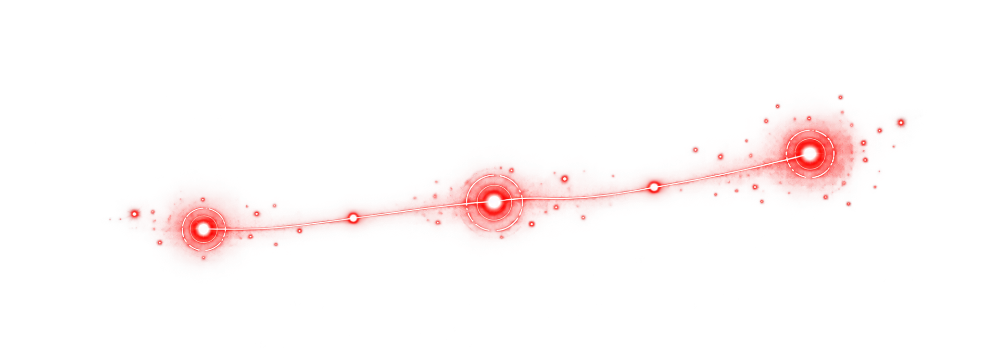

A replay, not a score.
Every validated path carries its timestamp, scope reference, reproduction steps, and the control that should have interrupted it.
Authorised red teaming. Replayable evidence.
Test the perimeter, rehearse an assumed breach, or challenge the software supply chain. Each service ends with evidence your team can reproduce.

replay.The figures below are synthetic demonstration data, included to show how an engagement replay can make a complex route legible without implying real client outcomes.
Every validated path carries its timestamp, scope reference, reproduction steps, and the control that should have interrupted it.
Nothing begins without a named signatory. Nothing becomes a finding until your engineers can see it happen again.
Explore the methodologyAgree on targets, exclusions, stop conditions, and a named signatory before any simulation begins.
Run the scenario from a monitored jump host, with every action timestamped against the approved scope.
Reproduce the intrusion path with the engineers who will fix it, using hashed proof instead of retained client data.
Turn findings into a prioritised remediation queue, then verify which changes genuinely close the route.
The method stays controlled; the adversary path changes with the systems, people, and authority you need to protect.
Tell us what you need to test. This academic demo returns an `ORL-######` reference and stores the recap only in your browser.